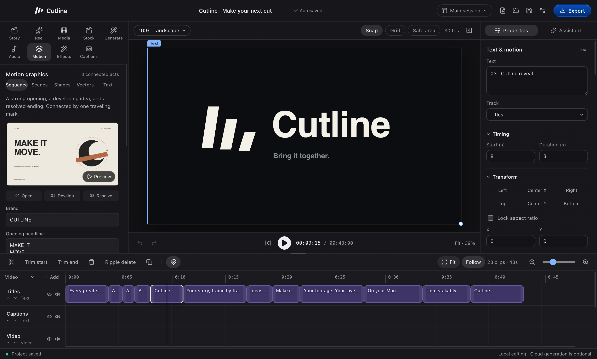

Creator Shorts
Start with your speaker video. Add word-timed captions, tighten pauses, and show real screenshots or recordings while the original voice continues.
Explore Creator punch and Screen demoA local video editor for Mac. Shape your footage, animate your ideas, and give every word a voice.
Source release 0.29.1. macOS 15+ on Apple Silicon.

Your footage, captions, motion and audio stay on the timeline. Shape the details until the cut feels right.
Start with your speaker video. Add word-timed captions, tighten pauses, and show real screenshots or recordings while the original voice continues.
Explore Creator punch and Screen demoChoose Kinetic type, Product focus, Sketch flow or Editorial collage. Turn your script into editable scenes, then create local narration and timed captions in one flow. Product focus uses your real screenshots or recordings.
Make your first explainerBuild title sequences, product explainers and logo reveals. Adjust text, shapes, layers, keyframes and easing directly in the editor.
See the motion controlsTurn a script into English voiceover on your Mac. Choose a voice and pace, add your music, and keep the speech clear in the mix.
Meet the voiceover toolsConnect Claude, Codex or a compatible MCP client to inspect a project, make edits and review preview frames. Manual editing works without an assistant account.
Read the connection guideA 43-second introduction with editable motion, local narration and an original score.
Sound on when you're ready. English captions are available in the player.
Every great story starts with a moment. A spark. A frame. A sound. Cutline brings them together.
Shape the edit. Give every word a voice. Turn a simple idea into motion. From bold creator shorts to cinematic product films.
Keep your footage, your layers, and your creative choices in your hands. Edit locally on your Mac. Bring an assistant when you want one.
Build something that feels unmistakably yours. Cutline. Make your next cut.
The film combines animated typography, Cutline's mark and views of the actual editor.
Cutline 0.29.1 is a source release for Apple Silicon Macs running macOS 15 or later.
Get the sourceInstall Node.js 22.12 or later, Git, CMake and Xcode Command Line Tools. Setup needs an internet connection to download dependencies and local models.
Clone the repository, follow the setup guide and run the commands below from the project folder.
npm ci
npm run setup:runtime
npx --no-install install-electron
npm run setup:vendor
npm run setup:speech
npm run build
npm startThere is no downloadable app in this release. Cutline's own source is MIT licensed; dependencies have separate terms. The current FFmpeg binary prevents distributing an app bundle. Read the third-party notices.
The current build supports Apple Silicon Macs running macOS 15 or later. Intel Macs, Windows and Linux are not supported by the current build and packaging setup.
Version 0.29.1 is a source-only release. Build it locally using the setup guide. The currently selected FFmpeg binary cannot be redistributed in an app or installer.
Cutline's original source code and documentation use the MIT license. Its dependencies keep their own terms. Remotion uses a separate custom license, and downloaded tools and models are not relicensed by Cutline. Review the third-party notices for the full distinction.
Manual editing, transcription, voiceover and export run locally after setup. Optional connected features have different data flows: assistants can receive chat messages, project details, transcripts and requested preview images. Stock providers receive searches; generation providers receive submitted prompts and selected reference images. See the security and privacy guide.
No account is needed for manual editing, local captions, local voiceover or export. Connecting Claude, Codex or another assistant is optional and uses that provider's account and usage terms.
Yes. Save your editable .cutline project and export a separate MP4. Keep the original media files available: saving the project does not collect those files into an archive. The first edit guide covers saving, moving and reopening projects.